5種類のペン先、Apple PencilとSペンの筆圧、そして画面に置いたままでいい手。ざっくり描いた図形はまっすぐ整い、囲んだ場所はワンタップで塗れます。
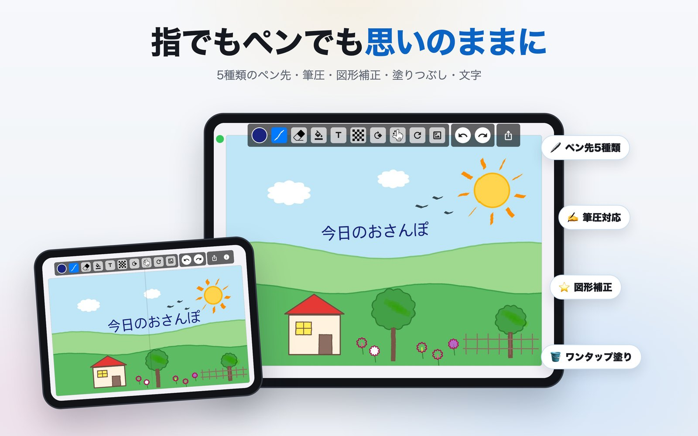
ペイントプロで描いた絵
下の絵はすべて、ペイントプロのツールだけで描きました。
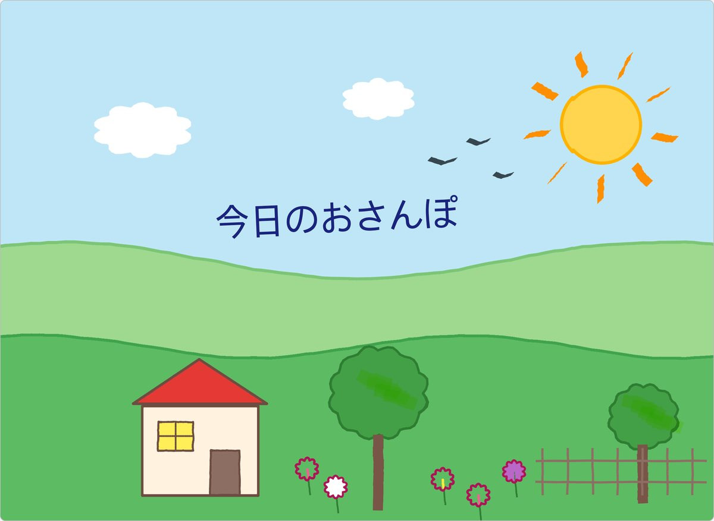
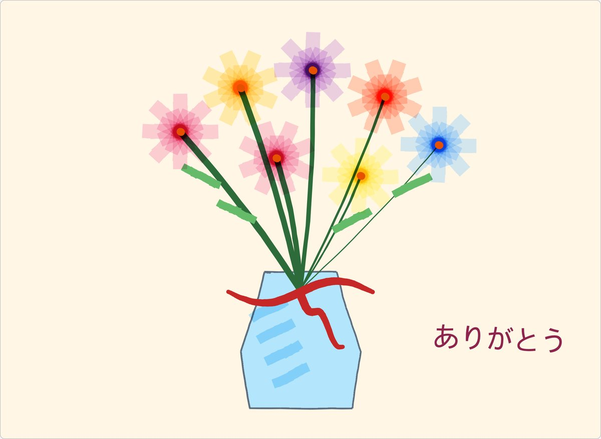
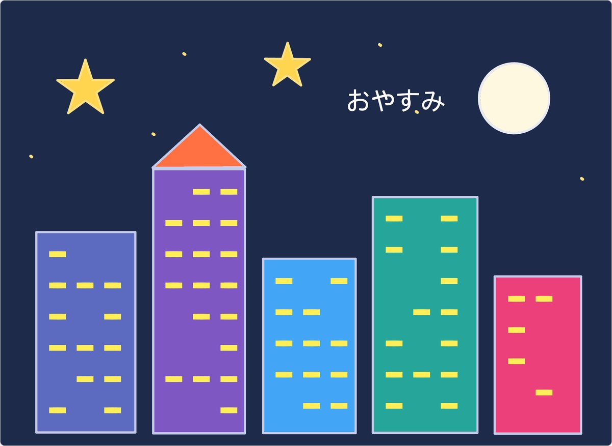
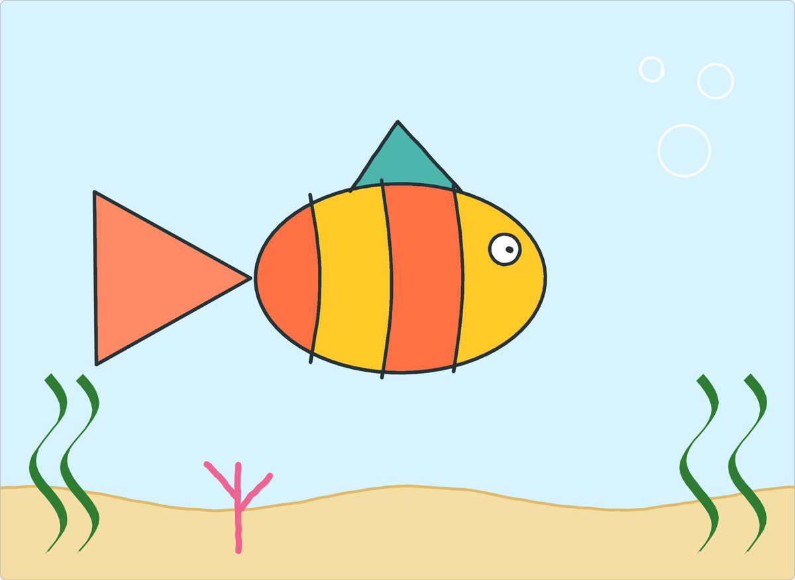
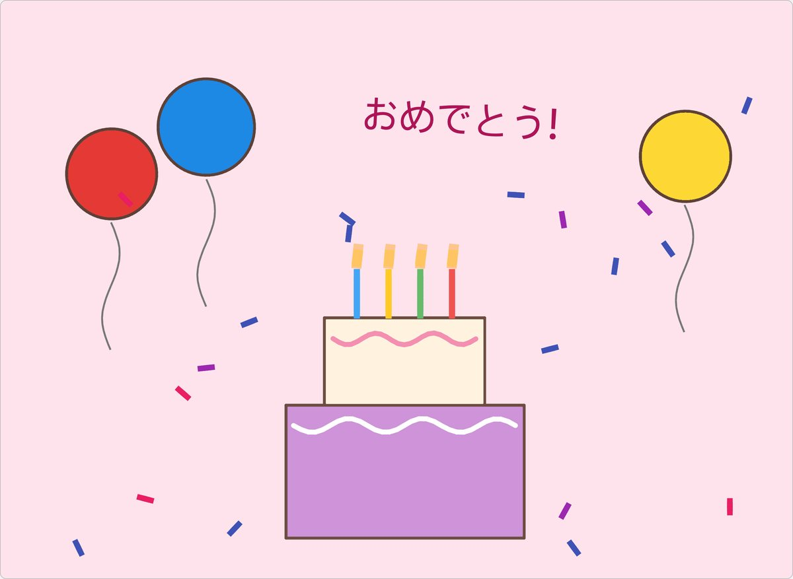
ツアー
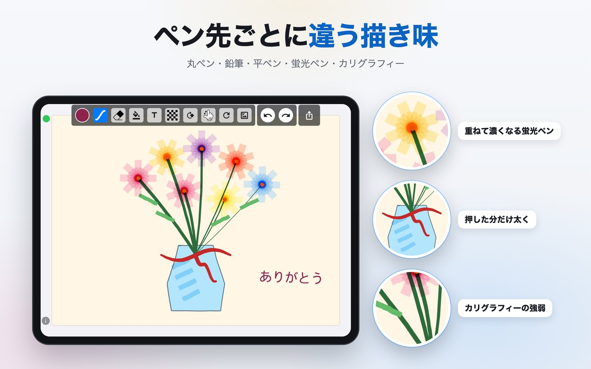
丸ペン、鉛筆、平ペン、蛍光ペン、カリグラフィー。蛍光ペンは重ねた分だけ濃くなり、カリグラフィーは引く方向で太さが自然に変わります。
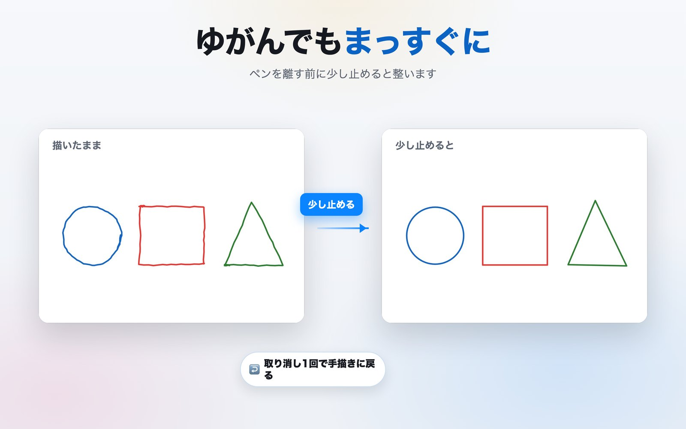
線、円、楕円、四角、三角、星を描いて、ペンを離す前に少し止めると整います。傾けて描けば、その角度のままです。
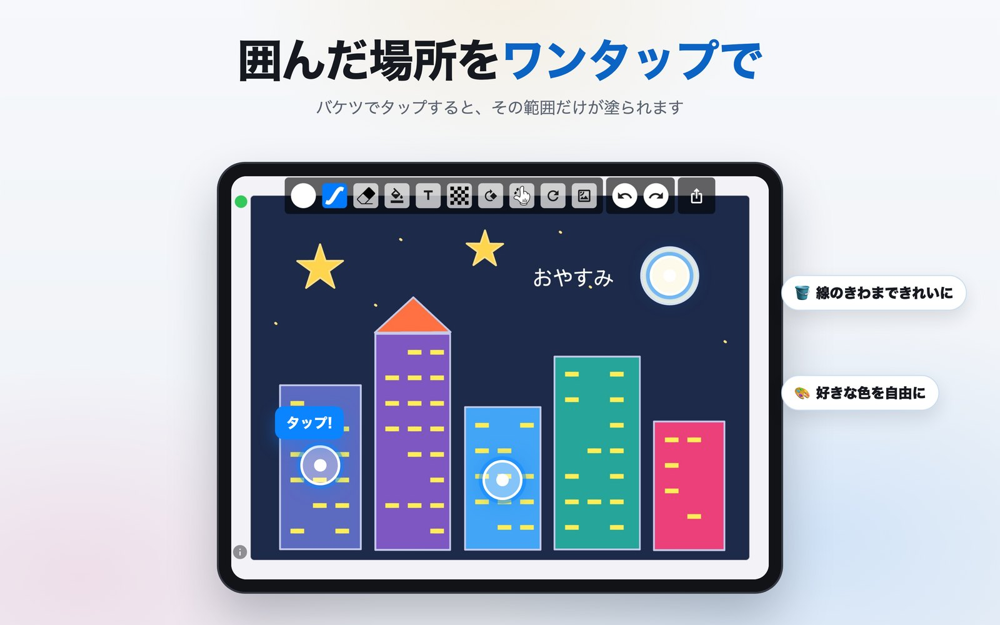
輪郭の中をタップすると、その範囲だけが塗られます。塗った色は絵の中に固定され、上から描いたり消したりできます。
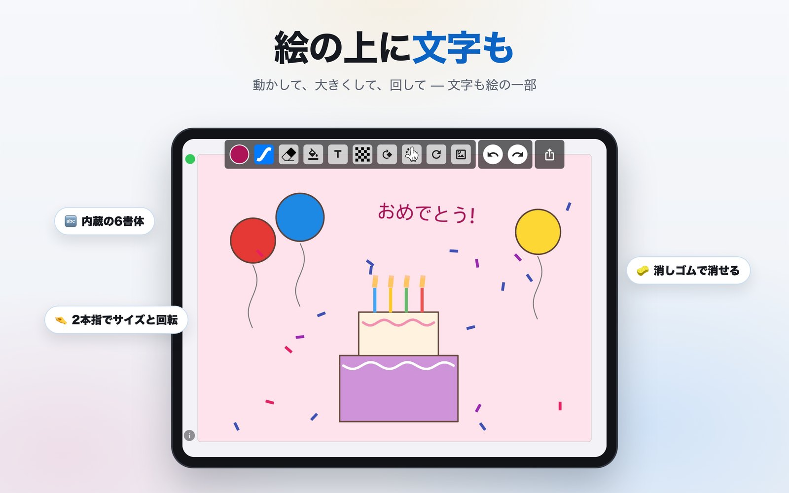
内蔵の6書体と標準書体。ドラッグで移動、ピンチで拡大、ひねって回転。文字も絵の一部なので消しゴムで消せます。
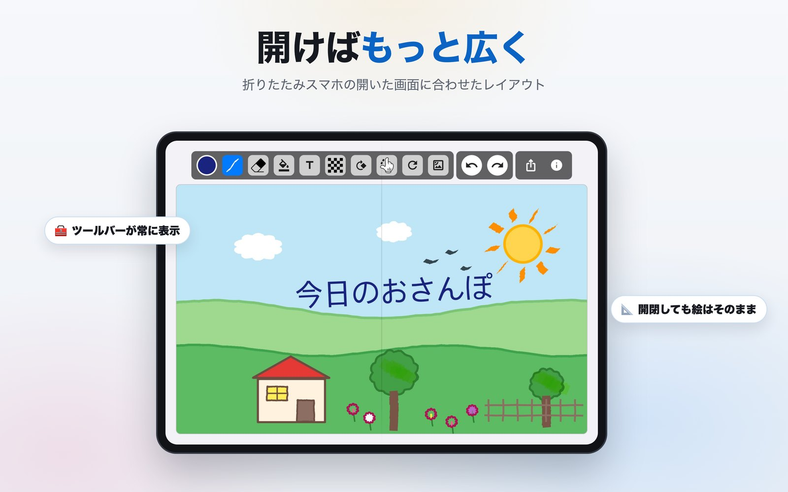
折りたたみスマートフォンを開くとツールバーが常に表示され、キャンバスが画面を広く使います。閉じて開いても描いた絵はそのままです。
細かいところまで
Apple PencilとSペンの筆圧を読み取り、強く押せば太く、軽く引けば細く描けます。
ペンが画面に触れている間、手のひらのタッチは無視します。
グリッド・スペクトラム・スライダーとHEX入力。線・背景・文字の色を別々に。
アルバムの写真を背景に読み込んで、その上に描けます。
キャンバスを回転・拡大して、描きやすい角度で。
アカウントもログインもありません。絵は端末の中だけに残り、ネットワークは広告にしか使いません。
プライバシー
アップロードするサーバーも、作品を結び付けるアカウントもありません。すべての処理は端末で行われ、アプリを削除すれば一緒に消えます。本アプリは無料で広告が入るため、Google AdMobとFirebase Analyticsが一般的な広告識別子と端末情報を収集します。その内容はすべてプライバシーポリシーに記載しています。
App StoreとGoogle Playで無料です。オフラインで動作し、ネットワークは広告にしか使いません。